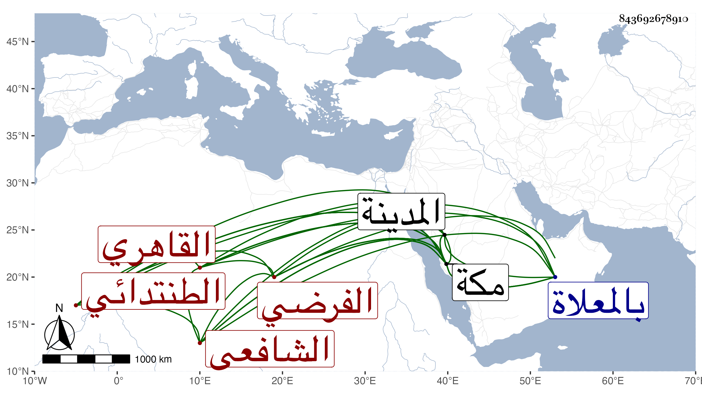

0902Sakhawi.DawLamic.ITO20230111-ara1.EIS1600.843692678910
Biography ID: 843692678910
598
علي بن أحمد بن علي بن عبد الله بن سند نور الدين الطنتدائي ثم القاهري الشافعي الفرضي أخو الشمس محمد التاجر ويعرف بالطنتدائي . ولد قبيل الثلاثين وثمانمائة وحفظ القرآن وغيره وأخذ الفرائض عن الزين البوتيجي وعنه وكذا عن الشمس الشنشي والبدر النسابة أخذ في الفقه وأخذ في الأصول عن إمام الكاملية وتميز في الفرائض والحساب وأقرأهما الطلبة فأجاد مع ظواهر الفقه وتنزل في صوفية سعيد السعداء والبيبرسية وغيرهما وحج وجاور بمكة واستقر به ابن الزمن في مشيخة رباطه بعد ابن عطيف وأقرأ الطلبة هناك وكذا جاور بالمدينة أشهرا وقد سمع على الشاوي بقراءة المنهلي صحيح البخاري وتردد إلي بمكة ونعم الرجل صلاحا وسلامة فطرة وانعزالا عن الناس . مات بمكة في مجاورة بها على المشيخة مرة أخرى في صفر سنة ثلاث وتسعين ودفن بالمعلاة ويقال أنه قارب التسعين رحمه الله وإيانا وقد رأيت اسم جده في موضع آخر بخطى محمدا والأول أصح .
